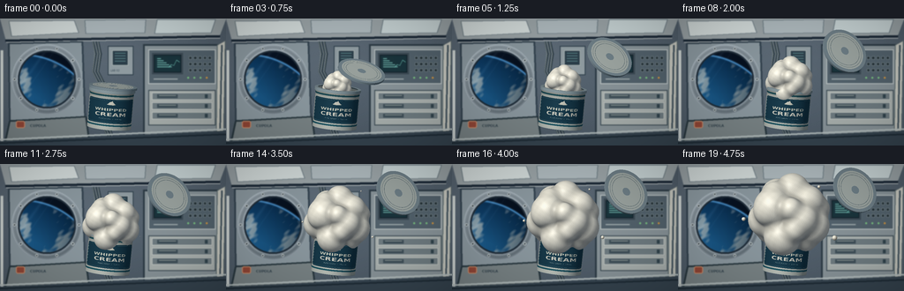
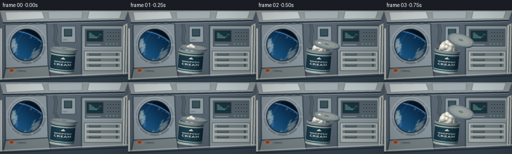

CODING AGENTS AS PIXEL WORLD MODELS
traex/GPT-6.1-Sol · mechanics_0006
点击播放 · 原生 RGB 像素
逐轮保存的候选
回放视频、检查图与代码变化。
每份候选均可单独播放。实际图片检查记录在下方工具轨迹中。
候选 01播放与检查图
点击播放 · 原生 RGB 像素


展开代码变化
--- 上一保存版本
+++ 本次保存版本
@@ -0,0 +1,348 @@
+"""Text-only procedural RGB animation; numpy ray geometry + PIL set construction."""
+from pathlib import Path
+import math, json
+import numpy as np
+from PIL import Image, ImageDraw, ImageFont, ImageFilter
+import artifact_io
+
+ROOT=Path(__file__).resolve().parent
+SPEC=json.loads((ROOT/'task_spec.json').read_text())
+W,H=SPEC['width'],SPEC['height']
+SS=3
+RW,RH=W*SS,H*SS
+rng=np.random.default_rng(42)
+
+def norm(v):
+ return v/np.maximum(np.linalg.norm(v,axis=-1,keepdims=True),1e-9)
+def font(size,bold=False):
+ name='DejaVuSans-Bold.ttf' if bold else 'DejaVuSans.ttf'
+ return ImageFont.truetype('/usr/share/fonts/truetype/dejavu/'+name,size)
+
+def background():
+ # ISS laboratory bulkhead, softly out of focus behind the experiment.
+ yy,xx=np.mgrid[:RH,:RW]; x=xx/SS; y=yy/SS
+ a=np.zeros((RH,RW,3),float)
+ a[:]=[78,91,103]
+ a+=(15*np.exp(-((x-88)/130)**2-((y-21)/75)**2))[...,None]
+ a+=rng.normal(0,.55,(RH,RW,1))
+ im=Image.fromarray(np.uint8(np.clip(a,0,255)))
+ d=ImageDraw.Draw(im)
+ def poly(p,fill,outline=None,width=1):
+ d.polygon([(int(u*SS),int(v*SS)) for u,v in p],fill=fill)
+ if outline:d.line([(int(u*SS),int(v*SS)) for u,v in p+[p[0]]],fill=outline,width=round(width*SS))
+ def rect(b,fill,outline=None,width=1): d.rectangle(tuple(round(v*SS) for v in b),fill=fill,outline=outline,width=round(width*SS))
+ def line(p,fill,width=1):d.line([(round(u*SS),round(v*SS)) for u,v in p],fill=fill,width=round(width*SS))
+ # Modular metal panels and recessed structural ribs.
+ poly([(0,0),(256,0),(248,21),(7,26)],(152,161,164))
+ poly([(10,3),(84,2),(89,16),(13,20)],(208,216,215),(112,126,133))
+ poly([(96,2),(165,1),(164,16),(97,17)],(172,183,187),(112,126,133))
+ poly([(178,1),(244,1),(239,16),(175,17)],(197,209,210),(112,126,133))
+ line([(6,25),(249,20)],(29,42,55),3)
+ line([(7,27),(249,22)],(202,207,205),1)
+ # Main window housing.
+ poly([(10,28),(93,26),(96,112),(11,116)],(137,150,157),(50,65,77),2)
+ poly([(11,116),(97,111),(101,141),(5,144)],(119,129,131),(40,55,62),2)
+ line([(2,36),(2,139)],(207,213,210),3)
+ # Lab racks on the other side.
+ rect((162,29,251,135),(135,146,151),(46,60,70),2)
+ rect((168,35,244,74),(82,97,107),(186,194,194),1)
+ rect((172,39,207,63),(19,35,43),(59,73,83),2)
+ rect((175,42,204,60),(26,52,60))
+ # Small scientific readout, status bars.
+ for k in range(5):
+ rect((178,45+k*2.3,182+k*3.1,45.7+k*2.3),(111,177,168))
+ line([(191,55),(194,52),(197,53),(200,47),(203,49)],(109,191,179),.7)
+ for row in range(3):
+ for col in range(5):
+ bx,by=214+col*5.5,43+row*7
+ rect((bx,by,bx+3,by+3),(35,48,54),(151,164,166),.4)
+ rect((174,68,201,69),(155,166,168))
+ for k in range(4):
+ bx=213+7*k
+ d.ellipse(((bx-1)*SS,66*SS,(bx+1)*SS,68*SS),fill=(121,191,128) if k<3 else (204,146,64))
+ rect((168,81,244,121),(167,174,172),(58,74,82),1)
+ for row in range(3):
+ y0=84+row*11
+ rect((172,y0,240,y0+8),(110,123,128),(199,203,198),.7)
+ rect((178,y0+2,201,y0+6),(62,78,87))
+ line([(180,y0+3),(199,y0+3)],(163,172,167),.5)
+ rect((232,y0+2,235,y0+6),(49,67,76))
+ # Right-side fabric stowage with restraining webbing.
+ poly([(255,25),(253,135),(245,129),(246,30)],(197,198,189),(94,108,112),1)
+ line([(251,30),(249,126)],(70,86,96),2)
+ # Cables snake around the wall behind the tub.
+ for off in [0,3,6]:
+ pts=[(105+off,26),(108+off,40),(105+off,60),(114+off,78),(113+off,112),(123+off,138)]
+ line(pts,(36,51,60),2)
+ line([(u-.5,v) for u,v in pts],(145,154,153),.6)
+ rect((122,31,151,64),(143,155,160),(47,64,75),1)
+ rect((127,36,145,53),(43,62,73),(176,185,183),.5)
+ for k in range(4):line([(130,39+k*3),(142,39+k*3)],(104,148,151),.65)
+ d.text((125*SS,57*SS),'LAB 02',font=font(3*SS),fill=(60,76,87))
+ # Bottom rail and mounting fittings.
+ poly([(0,139),(256,127),(256,144),(0,144)],(53,67,78))
+ line([(0,137),(256,125)],(177,187,187),2)
+ line([(0,141),(256,131)],(29,42,52),2)
+ # Porthole: machined radial metal, bolts, a blue Earth beyond.
+ cx,cy=53,69
+ rr=np.sqrt((x-cx)**2+(y-cy)**2)
+ theta=np.arctan2(y-cy,x-cx)
+ ring=(rr<40)&(rr>32)
+ radial=25*np.cos((rr-32)*.7)+17*np.cos(theta+2.0)
+ rim=np.stack([141+radial,153+radial,161+radial],axis=-1)
+ a=np.asarray(im).copy().astype(float);a[ring]=rim[ring]
+ r2=(x-cx)**2+(y-cy)**2
+ win=rr<32
+ space=np.zeros_like(a);space[:]=[6,15,28]
+ space += (7*np.exp(-((x-40)/36)**2-((y-43)/22)**2))[...,None]*np.array([.3,.6,1])
+ # Curved limb, sampled as a distant sphere's visible ocean and atmosphere.
+ ecx,ecy,er=25,129,88
+ re=np.sqrt((x-ecx)**2+(y-ecy)**2)
+ earth=re<er
+ depth=np.clip((er-re)/45,0,1)
+ light=.55+.45*np.clip((90-x)/110,0,1)
+ ocean=np.stack([13+20*depth,64+49*depth,111+63*depth],-1)*light[...,None]
+ # Coherent swirling cloud filaments on the planet, not random frame noise.
+ u=x+.17*y;v=y+.09*x
+ n=(np.sin(u*.10+2*np.sin(v*.06))+.50*np.sin(u*.27-v*.11+2*np.cos(u*.08))+.25*np.sin(u*.63+v*.23)+.17*np.cos(v*.91+u*.38))
+ cloud=np.clip((n-.24)*1.25,0,1)*np.clip((er-re)*.27,0,1)
+ cloud*= .60+.25*np.sin(x*.07+y*.04)**2
+ ocean=ocean*(1-cloud[...,None])+np.array([198,218,224])*cloud[...,None]*light[...,None]
+ space[earth]=ocean[earth]
+ atmos=np.exp(-((re-er)/1.05)**2)*.8
+ space=space*(1-atmos[...,None])+np.array([89,169,233])*atmos[...,None]
+ # Two faint glass reflections.
+ reflect=(np.exp(-((x+0.7*y-77)/2.3)**2)+.4*np.exp(-((x+.7*y-87)/1.2)**2))*.055
+ space += reflect[...,None]*np.array([160,188,209])
+ a[win]=space[win]
+ # Dark internal bevel.
+ mask=(rr>=31)&(rr<=33)
+ a[mask]=np.array([25,38,50]) + (rr[mask]-31)[:,None]*9
+ im=Image.fromarray(np.uint8(np.clip(a,0,255)));d=ImageDraw.Draw(im)
+ for j in range(10):
+ ang=2*np.pi*j/10;bx=cx+36.5*np.cos(ang);by=cy+36.5*np.sin(ang)
+ d.ellipse(((bx-1.6)*SS,(by-1.6)*SS,(bx+1.6)*SS,(by+1.6)*SS),fill=(53,67,75),outline=(187,195,196),width=SS)
+ d.line(((bx-.6)*SS,(by+.3)*SS,(bx+.6)*SS,(by-.3)*SS),fill=(25,35,42),width=SS)
+ # Red tether clip and tiny labels anchor the station setting.
+ d.rounded_rectangle((18*SS,116*SS,28*SS,124*SS),radius=2*SS,fill=(144,70,54),outline=(201,140,106),width=SS)
+ d.text((34*SS,119*SS),'CUPOLA',font=font(4*SS,True),fill=(48,64,74))
+ return np.asarray(im.filter(ImageFilter.GaussianBlur(.55*SS))).astype(np.float32)/255
+
+BG=background()
+# Camera looks slightly downward: depth is important at the tub opening.
+cam=np.array([0.,1.3,10.])
+target=np.array([0.,-.03,0.])
+forward=norm(target-cam);right=np.array([1.,0.,0.]);up=norm(np.cross(right,forward))
+xp=(np.arange(RW)+.5)/RW-.5;yp=.5-(np.arange(RH)+.5)/RH
+X,Y=np.meshgrid(xp*7.35,yp*7.35*H/W)
+O=cam+X[...,None]*right+Y[...,None]*up
+D=np.broadcast_to(forward,O.shape)
+LIGHT=norm(np.array([-3.8,5.,6.]))
+FILL=norm(np.array([4.,1.,3.]))
+
+def rot(x=0,y=0,z=0):
+ Rx=np.array([[1,0,0],[0,np.cos(x),-np.sin(x)],[0,np.sin(x),np.cos(x)]])
+ Ry=np.array([[np.cos(y),0,np.sin(y)],[0,1,0],[-np.sin(y),0,np.cos(y)]])
+ Rz=np.array([[np.cos(z),-np.sin(z),0],[np.sin(z),np.cos(z),0],[0,0,1]])
+ return Rz@Ry@Rx
+
+# Curved printed label, mapped to the plastic tub rather than screen space.
+tex=Image.new('RGB',(1024,512),(216,221,211));td=ImageDraw.Draw(tex)
+td.rectangle((0,37,1024,58),fill=(43,105,117))
+td.rectangle((0,442,1024,462),fill=(40,102,116))
+td.rounded_rectangle((289,94,735,422),radius=32,fill=(29,68,86))
+td.rounded_rectangle((301,106,723,410),radius=26,outline=(83,136,149),width=3)
+def txt_center(y,s,f,c):
+ bb=td.textbbox((0,0),s,font=f);td.text(((1024-(bb[2]-bb[0]))/2,y),s,font=f,fill=c)
+txt_center(208,'WHIPPED',font(49,True),(239,239,219))
+txt_center(264,'CREAM',font(64,True),(245,242,226))
+txt_center(352,'PURE DAIRY / 150 ml',font(16),(166,192,193))
+# Cream swirl icon.
+td.ellipse((479,155,545,172),fill=(234,232,211))
+td.ellipse((488,141,536,163),fill=(243,240,222))
+td.ellipse((496,129,528,151),fill=(248,246,229))
+td.polygon([(508,132),(522,114),(522,144)],fill=(247,244,226))
+TEX=np.asarray(tex).astype(float)/255
+
+class Renderer:
+ def __init__(self):
+ self.img=BG.copy();self.depth=np.full((RH,RW),np.inf,dtype=float)
+ def put(self,t,color):
+ m=(t<self.depth)&(t>0)&np.isfinite(t)
+ self.depth[m]=t[m];self.img[m]=color[m]
+ def cylinder(self,center,R,r,y0,y1,material='body',inner=0):
+ # Analytic finite cylinder, possibly an annular end cap.
+ o=(O-center)@R;v=D@R
+ A=v[...,0]**2+v[...,2]**2;B=2*(o[...,0]*v[...,0]+o[...,2]*v[...,2]);C=o[...,0]**2+o[...,2]**2-r*r
+ disc=B*B-4*A*C;root=np.sqrt(np.maximum(disc,0))
+ ts=np.full((RH,RW),np.inf);ns=np.zeros_like(O);p=np.zeros_like(O);kind=np.zeros((RH,RW),int)
+ for sgn in [-1,1]:
+ t=(-B+sgn*root)/(2*np.maximum(A,1e-9));q=o+t[...,None]*v
+ good=(disc>=0)&(t>0)&(q[...,1]>=y0)&(q[...,1]<=y1)&(t<ts)
+ ts[good]=t[good];p[good]=q[good]
+ n=norm(np.stack([q[...,0],np.zeros_like(t),q[...,2]],-1));ns[good]=n[good];kind[good]=0
+ for y,s in [(y0,-1),(y1,1)]:
+ t=(y-o[...,1])/v[...,1];q=o+t[...,None]*v
+ rad=q[...,0]**2+q[...,2]**2
+ good=(rad<=r*r)&(rad>=inner*inner)&(t>0)&(t<ts)
+ ts[good]=t[good];p[good]=q[good];ns[good]=[0,s,0];kind[good]=s
+ n=ns@R.T
+ diffuse=np.maximum(n@LIGHT,0);fill=np.maximum(n@FILL,0)
+ h=norm(LIGHT-forward)
+ spec=np.maximum(n@h,0)**(65 if material in ['rim','lid'] else 30)
+ albedo=np.ones_like(O)*np.array([.84,.85,.81])
+ if material=='body':
+ phi=np.arctan2(p[...,0],p[...,2]);u=(phi/(2*np.pi)+.5)*1023
+ vtex=np.clip((y1-p[...,1])/(y1-y0)*511,0,511)
+ albedo=TEX[vtex.astype(int),np.clip(u,0,1023).astype(int)]
+ albedo[kind!=0]=[.74,.78,.75]
+ elif material=='rim':albedo[:]=[.63,.70,.72]
+ elif material=='inside':albedo[:]=[.55,.59,.54]
+ elif material=='lid':
+ rad=np.sqrt(p[...,0]**2+p[...,2]**2)
+ band=(rad>.67)|(rad<.14)
+ albedo[:]=[.79,.82,.79];albedo[band]=[.56,.63,.66]
+ etched=((rad>.52)&(rad<.535))|((rad>.60)&(rad<.612))
+ albedo[etched]=[.50,.56,.57]
+ # The underside and folded edge are darker.
+ albedo[kind==-1]*=.82
+ color=albedo*(.29+.62*diffuse[...,None]+.12*fill[...,None])
+ color+=spec[...,None]*(.4 if material in ['rim','lid'] else .11)
+ # Cool ambient reflected from the cabin on the shadow side.
+ color+=(1-diffuse)[...,None]*np.array([.0,.025,.045])
+ if material=='body':
+ # Occlusion directly below overflowing cream at the shoulder.
+ ao=1-.26*np.exp(-((p[...,1]-y1)/.20)**2)
+ color*=ao[...,None]
+ self.put(ts,color)
+
+# One large continuous volume with smoothly merged asymmetrical lobes.
+# Expansion happens in 3-D, including toward the lens, without a downward pour.
+base=[([0,0,0],.79), ([-.48,.27,.39],.50),([.41,.43,.26],.46),([.03,.70,.05],.45),
+ ([-.18,-.47,.42],.48),([.54,-.16,.34],.47),([-.62,-.12,-.09],.45),
+ ([.27,.04,.68],.42),([-.30,.48,-.45],.43),([.49,.25,-.41],.39),
+ ([.20,-.47,-.38],.42),([-.44,-.40,-.30],.38),([-.45,.63,.22],.30),
+ ([.44,-.55,.24],.29),([.70,.27,.13],.31),([-.67,.15,.48],.27),
+ ([-.06,.31,.79],.29),([.08,-.23,.78],.29)]
+baseC=np.array([b[0] for b in base]);baseR=np.array([b[1] for b in base])
+
+def foam_params(e):
+ scale=.24+1.015*e
+ R=rot(y=.09*e,z=-.065*e)
+ c=np.array([-.05,-.30+.65*e,.06+.10*e])
+ centers=(baseC@R.T)*scale+c
+ radii=baseR*scale
+ # Slight lobe-wise relaxation, not random flicker.
+ radii*=1+.035*np.sin(np.arange(len(radii))*1.4+e*1.5)*e
+ return centers,radii,.145*scale,c,scale
+
+def sdf(p,centers,radii,k,gradient=False):
+ dv=p-centers[0];l=np.linalg.norm(dv,axis=-1);a=l-radii[0]
+ if gradient:g=dv/np.maximum(l[...,None],1e-8)
+ for c,r in zip(centers[1:],radii[1:]):
+ dv=p-c;l=np.linalg.norm(dv,axis=-1);b=l-r
+ h=np.clip(.5+.5*(b-a)/k,0,1)
+ a=b*(1-h)+a*h-k*h*(1-h)
+ if gradient:g=(dv/np.maximum(l[...,None],1e-8))*(1-h[...,None])+g*h[...,None]
+ return (a,g) if gradient else a
+
+def draw_foam(render,e):
+ centers,radii,k,c,scale=foam_params(e)
+ # Only march rays in a conservative bounding sphere.
+ rad=1.29*scale
+ oc=O-c;b=np.sum(oc*D,axis=-1);c0=np.sum(oc*oc,axis=-1)-rad*rad
+ disc=b*b-c0
+ mask=disc>0
+ ids=np.flatnonzero(mask)
+ o=O.reshape(-1,3)[ids];v=D.reshape(-1,3)[ids]
+ t=(-b.reshape(-1)[ids]-np.sqrt(disc.reshape(-1)[ids])).copy()
+ limit=-b.reshape(-1)[ids]+np.sqrt(disc.reshape(-1)[ids])
+ active=np.arange(len(t));hit=np.zeros(len(t),bool)
+ for step in range(85):
+ if not len(active):break
+ pos=o[active]+t[active,None]*v[active]
+ dist=sdf(pos,centers,radii,k)
+ success=dist<.0011
+ hit[active[success]]=True
+ t[active]+=np.maximum(dist*.87,.0005)
+ active=active[(~success)&(t[active]<limit[active])]
+ hi=np.flatnonzero(hit)
+ if not len(hi):return
+ p=o[hi]+t[hi,None]*v[hi]
+ dis,n=sdf(p,centers,radii,k,True);n=norm(n)
+ # Continuous tiny surface grain, plus gentle folded whipping striations.
+ q=(p-c)/scale
+ micro=(np.sin(q[:,0]*99+np.sin(q[:,1]*47))*np.sin(q[:,2]*85-q[:,1]*61))
+ broad=np.sin(q[:,0]*21+q[:,1]*11+2*np.sin(q[:,2]*8))*np.sin(q[:,1]*26-q[:,2]*9)
+ diffuse=np.clip(n@LIGHT,0,1);fill=np.maximum(n@FILL,0)
+ # SDF ambient occlusion makes merged lobes read as dense, creamy folds.
+ ao=np.ones(len(p))
+ for distance,weight in [(.065*scale,.28),(.15*scale,.25),(.30*scale,.16)]:
+ ad=sdf(p+n*distance,centers,radii,k)
+ ao-=weight*np.clip((distance-ad)/distance,0,1)
+ ao=np.clip(ao,.46,1)
+ h=norm(LIGHT-forward)
+ spec=np.maximum(n@h,0)**37
+ # Warm key light / blue station bounce; cream is opaque, not vapour.
+ albedo=np.tile(np.array([.975,.960,.895]),(len(p),1))
+ albedo*= (1+.007*micro+.014*broad)[:,None]
+ col=albedo*(.34+.62*diffuse[:,None]+.09*fill[:,None])*ao[:,None]
+ col += (spec*.105)[:,None]
+ col += (1-diffuse)[:,None]*np.array([-.012,.013,.047])
+ # Soft subsurface wrap on the terminator.
+ wrap=np.clip((n@LIGHT+.35)/1.35,0,1)-diffuse
+ col+=wrap[:,None]*np.array([.14,.117,.082])
+ global_ids=ids[hi]
+ dep=render.depth.reshape(-1)
+ front=t[hi]<dep[global_ids]
+ render.img.reshape(-1,3)[global_ids[front]]=col[front]
+ dep[global_ids[front]]=t[hi][front]
+
+def render_frame(i):
+ sec=i/SPEC['fps'];e=(i/(SPEC['frames']-1))**.85
+ rr=Renderer()
+ # Container very slowly drifts, with no acceleration or gravity-driven fall.
+ drift=np.array([-.055*np.sin(e*1.0),.025*e,.0])
+ R=rot(z=-.085-.022*e,y=.035*e)
+ ctr=np.array([0.,0.,0.])+drift
+ rr.cylinder(ctr,R,.718,-1.52,-.285,'body')
+ rr.cylinder(ctr,R,.718,-1.53,-1.47,'rim')
+ rr.cylinder(ctr,R,.755,-.325,-.235,'rim',inner=.656)
+ rr.cylinder(ctr,R,.661,-.43,-.426,'inside')
+ if i>0:draw_foam(rr,e)
+ # Sealed on the first frame. The released lid lifts, turns, and keeps drifting.
+ s=np.clip(sec/1.65,0,1);ease=s*s*(3-2*s)
+ lidc=ctr+np.array([1.70*ease+.13*max(sec-1.65,0),-.215+1.18*ease+.075*max(sec-1.65,0),.09+.23*ease])
+ lidR=R@rot(x=.78*ease+.035*max(sec-1.65,0),y=.28*ease,z=-.32*ease)
+ rr.cylinder(lidc,lidR,.783,0,.07,'lid')
+ # Tiny detached droplets underscore weightlessness late in the clip.
+ if e>.60:
+ a=(e-.60)/.40
+ bubbles=[(np.array([-.93-.61*a,.12+.16*a,.25]),.065*a),
+ (np.array([.84+.58*a,-.27-.05*a,.38]),.08*a),
+ (np.array([.57+.34*a,1.05+.25*a,-.05]),.05*a)]
+ for c,r in bubbles:
+ # Actual opaque cream globules, analytic spheres.
+ oc=O-c;b=np.sum(oc*D,axis=-1);disc=b*b-np.sum(oc*oc,axis=-1)+r*r
+ t=-b-np.sqrt(np.maximum(disc,0));t[disc<0]=np.inf
+ ps=O+np.where(np.isfinite(t),t,0)[...,None]*D
+ n=norm(ps-c)
+ dl=np.maximum(n@LIGHT,0);sp=np.maximum(n@norm(LIGHT-forward),0)**35
+ col=np.array([.98,.96,.89])*(.35+.64*dl[...,None])+sp[...,None]*.09
+ rr.put(t,col)
+ img=np.clip(rr.img,0,1)
+ # Subtle photographic tone curve, restrained corner falloff.
+ vignette=1-.14*((X/4.0)**2+(Y/2.7)**2)
+ img*=vignette[...,None]
+ im=Image.fromarray(np.uint8(np.clip(img*255,0,255))).resize((W,H),Image.Resampling.LANCZOS)
+ return np.asarray(im)
+
+def main():
+ frames=[]
+ for i in range(SPEC['frames']):
+ frames.append(render_frame(i))
+ print(f'Rendered {i+1}/{SPEC["frames"]}',flush=True)
+ artifact_io.save(np.stack(frames),ROOT)
+ print('Saved RGB animation artifacts.',flush=True)
+
+if __name__=='__main__':main()
可观测工具轨迹
实际执行的命令与返回图片。
命令 1exit 0
/bin/bash -lc "pwd && ls -la && cat prompt.txt && printf '\\n--- RULES ---\\n' && cat GENERATION_RULES.md && printf '\\n--- SPEC ---\\n' && cat task_spec.json"
命令 2exit 0
/bin/bash -lc "cat artifact_io.py && python - <<'PY' import importlib.util for x in ['numpy','PIL','scipy']: print(x, bool(importlib.util.find_spec(x))) PY"
命令 3exit 0
/bin/bash -lc 'fc-list | head -6'
命令 4exit 0
/bin/bash -lc "cat > generate.py <<'PY'
\"\"\"Text-only procedural RGB animation; numpy ray geometry + PIL set construction.\"\"\"
from pathlib import Path
import math, json
import numpy as np
from PIL import Image, ImageDraw, ImageFont, ImageFilter
import artifact_io
ROOT=Path(__file__).resolve().parent
SPEC=json.loads((ROOT/'task_spec.json').read_text())
W,H=SPEC['width'],SPEC['height']
SS=3
RW,RH=W*SS,H*SS
rng=np.random.default_rng(42)
def norm(v):
return v/np.maximum(np.linalg.norm(v,axis=-1,keepdims=True),1e-9)
def font(size,bold=False):
name='DejaVuSans-Bold.ttf' if bold else 'DejaVuSans.ttf'
return ImageFont.truetype('/usr/share/fonts/truetype/dejavu/'+name,size)
def background():
# ISS laboratory bulkhead, softly out of focus behind the experiment.
yy,xx=np.mgrid[:RH,:RW]; x=xx/SS; y=yy/SS
a=np.zeros((RH,RW,3),float)
a[:]=[78,91,103]
a+=(15*np.exp(-((x-88)/130)**2-((y-21)/75)**2))[...,None]
a+=rng.normal(0,.55,(RH,RW,1))
im=Image.fromarray(np.uint8(np.clip(a,0,255)))
d=ImageDraw.Draw(im)
def poly(p,fill,outline=None,width=1):
d.polygon([(int(u*SS),int(v*SS)) for u,v in p],fill=fill)
if outline:d.line([(int(u*SS),int(v*SS)) for u,v in p+[p[0]]],fill=outline,width=round(width*SS))
def rect(b,fill,outline=None,width=1): d.rectangle(tuple(round(v*SS) for v in b),fill=fill,outline=outline,width=round(width*SS))
def line(p,fill,width=1):d.line([(round(u*SS),round(v*SS)) for u,v in p],fill=fill,width=round(width*SS))
# Modular metal panels and recessed structural ribs.
poly([(0,0),(256,0),(248,21),(7,26)],(152,161,164))
poly([(10,3),(84,2),(89,16),(13,20)],(208,216,215),(112,126,133))
poly([(96,2),(165,1),(164,16),(97,17)],(172,183,187),(112,126,133))
poly([(178,1),(244,1),(239,16),(175,17)],(197,209,210),(112,126,133))
line([(6,25),(249,20)],(29,42,55),3)
line([(7,27),(249,22)],(202,207,205),1)
# Main window housing.
poly([(10,28),(93,26),(96,112),(11,116)],(137,150,157),(50,65,77),2)
poly([(11,116),(97,111),(101,141),(5,144)],(119,129,131),(40,55,62),2)
line([(2,36),(2,139)],(207,213,210),3)
# Lab racks on the other side.
rect((162,29,251,135),(135,146,151),(46,60,70),2)
rect((168,35,244,74),(82,97,107),(186,194,194),1)
rect((172,39,207,63),(19,35,43),(59,73,83),2)
rect((175,42,204,60),(26,52,60))
# Small scientific readout, status bars.
for k in range(5):
rect((178,45+k*2.3,182+k*3.1,45.7+k*2.3),(111,177,168))
line([(191,55),(194,52),(197,53),(200,47),(203,49)],(109,191,179),.7)
for row in range(3):
for col in range(5):
bx,by=214+col*5.5,43+row*7
rect((bx,by,bx+3,by+3),(35,48,54),(151,164,166),.4)
rect((174,68,201,69),(155,166,168))
for k in range(4):
bx=213+7*k
d.ellipse(((bx-1)*SS,66*SS,(bx+1)*SS,68*SS),fill=(121,191,128) if k<3 else (204,146,64))
rect((168,81,244,121),(167,174,172),(58,74,82),1)
for row in range(3):
y0=84+row*11
rect((172,y0,240,y0+8),(110,123,128),(199,203,198),.7)
rect((178,y0+2,201,y0+6),(62,78,87))
line([(180,y0+3),(199,y0+3)],(163,172,167),.5)
rect((232,y0+2,235,y0+6),(49,67,76))
# Right-side fabric stowage with restraining webbing.
poly([(255,25),(253,135),(245,129),(246,30)],(197,198,189),(94,108,112),1)
line([(251,30),(249,126)],(70,86,96),2)
# Cables snake around the wall behind the tub.
for off in [0,3,6]:
pts=[(105+off,26),(108+off,40),(105+off,60),(114+off,78),(113+off,112),(123+off,138)]
line(pts,(36,51,60),2)
line([(u-.5,v) for u,v in pts],(145,154,153),.6)
rect((122,31,151,64),(143,155,160),(47,64,75),1)
rect((127,36,145,53),(43,62,73),(176,185,183),.5)
for k in range(4):line([(130,39+k*3),(142,39+k*3)],(104,148,151),.65)
d.text((125*SS,57*SS),'LAB 02',font=font(3*SS),fill=(60,76,87))
# Bottom rail and mounting fittings.
poly([(0,139),(256,127),(256,144),(0,144)],(53,67,78))
line([(0,137),(256,125)],(177,187,187),2)
line([(0,141),(256,131)],(29,42,52),2)
# Porthole: machined radial metal, bolts, a blue Earth beyond.
cx,cy=53,69
rr=np.sqrt((x-cx)**2+(y-cy)**2)
theta=np.arctan2(y-cy,x-cx)
ring=(rr<40)&(rr>32)
radial=25*np.cos((rr-32)*.7)+17*np.cos(theta+2.0)
rim=np.stack([141+radial,153+radial,161+radial],axis=-1)
a=np.asarray(im).copy().astype(float);a[ring]=rim[ring]
r2=(x-cx)**2+(y-cy)**2
win=rr<32
space=np.zeros_like(a);space[:]=[6,15,28]
space += (7*np.exp(-((x-40)/36)**2-((y-43)/22)**2))[...,None]*np.array([.3,.6,1])
# Curved limb, sampled as a distant sphere's visible ocean and atmosphere.
ecx,ecy,er=25,129,88
re=np.sqrt((x-ecx)**2+(y-ecy)**2)
earth=re<er
depth=np.clip((er-re)/45,0,1)
light=.55+.45*np.clip((90-x)/110,0,1)
ocean=np.stack([13+20*depth,64+49*depth,111+63*depth],-1)*light[...,None]
# Coherent swirling cloud filaments on the planet, not random frame noise.
u=x+.17*y;v=y+.09*x
n=(np.sin(u*.10+2*np.sin(v*.06))+.50*np.sin(u*.27-v*.11+2*np.cos(u*.08))+.25*np.sin(u*.63+v*.23)+.17*np.cos(v*.91+u*.38))
cloud=np.clip((n-.24)*1.25,0,1)*np.clip((er-re)*.27,0,1)
cloud*= .60+.25*np.sin(x*.07+y*.04)**2
ocean=ocean*(1-cloud[...,None])+np.array([198,218,224])*cloud[...,None]*light[...,None]
space[earth]=ocean[earth]
atmos=np.exp(-((re-er)/1.05)**2)*.8
space=space*(1-atmos[...,None])+np.array([89,169,233])*atmos[...,None]
# Two faint glass reflections.
reflect=(np.exp(-((x+0.7*y-77)/2.3)**2)+.4*np.exp(-((x+.7*y-87)/1.2)**2))*.055
space += reflect[...,None]*np.array([160,188,209])
a[win]=space[win]
# Dark internal bevel.
mask=(rr>=31)&(rr<=33)
a[mask]=np.array([25,38,50]) + (rr[mask]-31)[:,None]*9
im=Image.fromarray(np.uint8(np.clip(a,0,255)));d=ImageDraw.Draw(im)
for j in range(10):
ang=2*np.pi*j/10;bx=cx+36.5*np.cos(ang);by=cy+36.5*np.sin(ang)
d.ellipse(((bx-1.6)*SS,(by-1.6)*SS,(bx+1.6)*SS,(by+1.6)*SS),fill=(53,67,75),outline=(187,195,196),width=SS)
d.line(((bx-.6)*SS,(by+.3)*SS,(bx+.6)*SS,(by-.3)*SS),fill=(25,35,42),width=SS)
# Red tether clip and tiny labels anchor the station setting.
d.rounded_rectangle((18*SS,116*SS,28*SS,124*SS),radius=2*SS,fill=(144,70,54),outline=(201,140,106),width=SS)
d.text((34*SS,119*SS),'CUPOLA',font=font(4*SS,True),fill=(48,64,74))
return np.asarray(im.filter(ImageFilter.GaussianBlur(.55*SS))).astype(np.float32)/255
BG=background()
# Camera looks slightly downward: depth is important at the tub opening.
cam=np.array([0.,1.3,10.])
target=np.array([0.,-.03,0.])
forward=norm(target-cam);right=np.array([1.,0.,0.]);up=norm(np.cross(right,forward))
xp=(np.arange(RW)+.5)/RW-.5;yp=.5-(np.arange(RH)+.5)/RH
X,Y=np.meshgrid(xp*7.35,yp*7.35*H/W)
O=cam+X[...,None]*right+Y[...,None]*up
D=np.broadcast_to(forward,O.shape)
LIGHT=norm(np.array([-3.8,5.,6.]))
FILL=norm(np.array([4.,1.,3.]))
def rot(x=0,y=0,z=0):
Rx=np.array([[1,0,0],[0,np.cos(x),-np.sin(x)],[0,np.sin(x),np.cos(x)]])
Ry=np.array([[np.cos(y),0,np.sin(y)],[0,1,0],[-np.sin(y),0,np.cos(y)]])
Rz=np.array([[np.cos(z),-np.sin(z),0],[np.sin(z),np.cos(z),0],[0,0,1]])
return Rz@Ry@Rx
# Curved printed label, mapped to the plastic tub rather than screen space.
tex=Image.new('RGB',(1024,512),(216,221,211));td=ImageDraw.Draw(tex)
td.rectangle((0,37,1024,58),fill=(43,105,117))
td.rectangle((0,442,1024,462),fill=(40,102,116))
td.rounded_rectangle((289,94,735,422),radius=32,fill=(29,68,86))
td.rounded_rectangle((301,106,723,410),radius=26,outline=(83,136,149),width=3)
def txt_center(y,s,f,c):
bb=td.textbbox((0,0),s,font=f);td.text(((1024-(bb[2]-bb[0]))/2,y),s,font=f,fill=c)
txt_center(208,'WHIPPED',font(49,True),(239,239,219))
txt_center(264,'CREAM',font(64,True),(245,242,226))
txt_center(352,'PURE DAIRY / 150 ml',font(16),(166,192,193))
# Cream swirl icon.
td.ellipse((479,155,545,172),fill=(234,232,211))
td.ellipse((488,141,536,163),fill=(243,240,222))
td.ellipse((496,129,528,151),fill=(248,246,229))
td.polygon([(508,132),(522,114),(522,144)],fill=(247,244,226))
TEX=np.asarray(tex).astype(float)/255
class Renderer:
def __init__(self):
self.img=BG.copy();self.depth=np.full((RH,RW),np.inf,dtype=float)
def put(self,t,color):
m=(t<self.depth)&(t>0)&np.isfinite(t)
self.depth[m]=t[m];self.img[m]=color[m]
def cylinder(self,center,R,r,y0,y1,material='body',inner=0):
# Analytic finite cylinder, possibly an annular end cap.
o=(O-center)@R;v=D@R
A=v[...,0]**2+v[...,2]**2;B=2*(o[...,0]*v[...,0]+o[...,2]*v[...,2]);C=o[...,0]**2+o[...,2]**2-r*r
disc=B*B-4*A*C;root=np.sqrt(np.maximum(disc,0))
ts=np.full((RH,RW),np.inf);ns=np.zeros_like(O);p=np.zeros_like(O);kind=np.zeros((RH,RW),int)
for sgn in [-1,1]:
t=(-B+sgn*root)/(2*np.maximum(A,1e-9));q=o+t[...,None]*v
good=(disc>=0)&(t>0)&(q[...,1]>=y0)&(q[...,1]<=y1)&(t<ts)
ts[good]=t[good];p[good]=q[good]
n=norm(np.stack([q[...,0],np.zeros_like(t),q[...,2]],-1));ns[good]=n[good];kind[good]=0
for y,s in [(y0,-1),(y1,1)]:
t=(y-o[...,1])/v[...,1];q=o+t[...,None]*v
rad=q[...,0]**2+q[...,2]**2
good=(rad<=r*r)&(rad>=inner*inner)&(t>0)&(t<ts)
ts[good]=t[good];p[good]=q[good];ns[good]=[0,s,0];kind[good]=s
n=ns@R.T
diffuse=np.maximum(n@LIGHT,0);fill=np.maximum(n@FILL,0)
h=norm(LIGHT-forward)
spec=np.maximum(n@h,0)**(65 if material in ['rim','lid'] else 30)
albedo=np.ones_like(O)*np.array([.84,.85,.81])
if material=='body':
phi=np.arctan2(p[...,0],p[...,2]);u=(phi/(2*np.pi)+.5)*1023
vtex=np.clip((y1-p[...,1])/(y1-y0)*511,0,511)
albedo=TEX[vtex.astype(int),np.clip(u,0,1023).astype(int)]
albedo[kind"'!=0]=[.74,.78,.75]
elif material=='"'rim':albedo[:]=[.63,.70,.72]
elif material=='inside':albedo[:]=[.55,.59,.54]
elif material=='lid':
rad=np.sqrt(p[...,0]**2+p[...,2]**2)
band=(rad>.67)|(rad<.14)
albedo[:]=[.79,.82,.79];albedo[band]=[.56,.63,.66]
etched=((rad>.52)&(rad<.535))|((rad>.60)&(rad<.612))
albedo[etched]=[.50,.56,.57]
# The underside and folded edge are darker.
albedo[kind==-1]*=.82
color=albedo*(.29+.62*diffuse[...,None]+.12*fill[...,None])
color+=spec[...,None]*(.4 if material in ['rim','lid'] else .11)
# Cool ambient reflected from the cabin on the shadow side.
color+=(1-diffuse)[...,None]*np.array([.0,.025,.045])
if material=='body':
# Occlusion directly below overflowing cream at the shoulder.
ao=1-.26*np.exp(-((p[...,1]-y1)/.20)**2)
color*=ao[...,None]
self.put(ts,color)
# One large continuous volume with smoothly merged asymmetrical lobes.
# Expansion happens in 3-D, including toward the lens, without a downward pour.
base=[([0,0,0],.79), ([-.48,.27,.39],.50),([.41,.43,.26],.46),([.03,.70,.05],.45),
([-.18,-.47,.42],.48),([.54,-.16,.34],.47),([-.62,-.12,-.09],.45),
([.27,.04,.68],.42),([-.30,.48,-.45],.43),([.49,.25,-.41],.39),
([.20,-.47,-.38],.42),([-.44,-.40,-.30],.38),([-.45,.63,.22],.30),
([.44,-.55,.24],.29),([.70,.27,.13],.31),([-.67,.15,.48],.27),
([-.06,.31,.79],.29),([.08,-.23,.78],.29)]
baseC=np.array([b[0] for b in base]);baseR=np.array([b[1] for b in base])
def foam_params(e):
scale=.24+1.015*e
R=rot(y=.09*e,z=-.065*e)
c=np.array([-.05,-.30+.65*e,.06+.10*e])
centers=(baseC@R.T)*scale+c
radii=baseR*scale
# Slight lobe-wise relaxation, not random flicker.
radii*=1+.035*np.sin(np.arange(len(radii))*1.4+e*1.5)*e
return centers,radii,.145*scale,c,scale
def sdf(p,centers,radii,k,gradient=False):
dv=p-centers[0];l=np.linalg.norm(dv,axis=-1);a=l-radii[0]
if gradient:g=dv/np.maximum(l[...,None],1e-8)
for c,r in zip(centers[1:],radii[1:]):
dv=p-c;l=np.linalg.norm(dv,axis=-1);b=l-r
h=np.clip(.5+.5*(b-a)/k,0,1)
a=b*(1-h)+a*h-k*h*(1-h)
if gradient:g=(dv/np.maximum(l[...,None],1e-8))*(1-h[...,None])+g*h[...,None]
return (a,g) if gradient else a
def draw_foam(render,e):
centers,radii,k,c,scale=foam_params(e)
# Only march rays in a conservative bounding sphere.
rad=1.29*scale
oc=O-c;b=np.sum(oc*D,axis=-1);c0=np.sum(oc*oc,axis=-1)-rad*rad
disc=b*b-c0
mask=disc>0
ids=np.flatnonzero(mask)
o=O.reshape(-1,3)[ids];v=D.reshape(-1,3)[ids]
t=(-b.reshape(-1)[ids]-np.sqrt(disc.reshape(-1)[ids])).copy()
limit=-b.reshape(-1)[ids]+np.sqrt(disc.reshape(-1)[ids])
active=np.arange(len(t));hit=np.zeros(len(t),bool)
for step in range(85):
if not len(active):break
pos=o[active]+t[active,None]*v[active]
dist=sdf(pos,centers,radii,k)
success=dist<.0011
hit[active[success]]=True
t[active]+=np.maximum(dist*.87,.0005)
active=active[(~success)&(t[active]<limit[active])]
hi=np.flatnonzero(hit)
if not len(hi):return
p=o[hi]+t[hi,None]*v[hi]
dis,n=sdf(p,centers,radii,k,True);n=norm(n)
# Continuous tiny surface grain, plus gentle folded whipping striations.
q=(p-c)/scale
micro=(np.sin(q[:,0]*99+np.sin(q[:,1]*47))*np.sin(q[:,2]*85-q[:,1]*61))
broad=np.sin(q[:,0]*21+q[:,1]*11+2*np.sin(q[:,2]*8))*np.sin(q[:,1]*26-q[:,2]*9)
diffuse=np.clip(n@LIGHT,0,1);fill=np.maximum(n@FILL,0)
# SDF ambient occlusion makes merged lobes read as dense, creamy folds.
ao=np.ones(len(p))
for distance,weight in [(.065*scale,.28),(.15*scale,.25),(.30*scale,.16)]:
ad=sdf(p+n*distance,centers,radii,k)
ao-=weight*np.clip((distance-ad)/distance,0,1)
ao=np.clip(ao,.46,1)
h=norm(LIGHT-forward)
spec=np.maximum(n@h,0)**37
# Warm key light / blue station bounce; cream is opaque, not vapour.
albedo=np.tile(np.array([.975,.960,.895]),(len(p),1))
albedo*= (1+.007*micro+.014*broad)[:,None]
col=albedo*(.34+.62*diffuse[:,None]+.09*fill[:,None])*ao[:,None]
col += (spec*.105)[:,None]
col += (1-diffuse)[:,None]*np.array([-.012,.013,.047])
# Soft subsurface wrap on the terminator.
wrap=np.clip((n@LIGHT+.35)/1.35,0,1)-diffuse
col+=wrap[:,None]*np.array([.14,.117,.082])
global_ids=ids[hi]
dep=render.depth.reshape(-1)
front=t[hi]<dep[global_ids]
render.img.reshape(-1,3)[global_ids[front]]=col[front]
dep[global_ids[front]]=t[hi][front]
def render_frame(i):
sec=i/SPEC['fps'];e=(i/(SPEC['frames']-1))**.85
rr=Renderer()
# Container very slowly drifts, with no acceleration or gravity-driven fall.
drift=np.array([-.055*np.sin(e*1.0),.025*e,.0])
R=rot(z=-.085-.022*e,y=.035*e)
ctr=np.array([0.,0.,0.])+drift
rr.cylinder(ctr,R,.718,-1.52,-.285,'body')
rr.cylinder(ctr,R,.718,-1.53,-1.47,'rim')
rr.cylinder(ctr,R,.755,-.325,-.235,'rim',inner=.656)
rr.cylinder(ctr,R,.661,-.43,-.426,'inside')
if i>0:draw_foam(rr,e)
# Sealed on the first frame. The released lid lifts, turns, and keeps drifting.
s=np.clip(sec/1.65,0,1);ease=s*s*(3-2*s)
lidc=ctr+np.array([1.70*ease+.13*max(sec-1.65,0),-.215+1.18*ease+.075*max(sec-1.65,0),.09+.23*ease])
lidR=R@rot(x=.78*ease+.035*max(sec-1.65,0),y=.28*ease,z=-.32*ease)
rr.cylinder(lidc,lidR,.783,0,.07,'lid')
# Tiny detached droplets underscore weightlessness late in the clip.
if e>.60:
a=(e-.60)/.40
bubbles=[(np.array([-.93-.61*a,.12+.16*a,.25]),.065*a),
(np.array([.84+.58*a,-.27-.05*a,.38]),.08*a),
(np.array([.57+.34*a,1.05+.25*a,-.05]),.05*a)]
for c,r in bubbles:
# Actual opaque cream globules, analytic spheres.
oc=O-c;b=np.sum(oc*D,axis=-1);disc=b*b-np.sum(oc*oc,axis=-1)+r*r
t=-b-np.sqrt(np.maximum(disc,0));t[disc<0]=np.inf
ps=O+np.where(np.isfinite(t),t,0)[...,None]*D
n=norm(ps-c)
dl=np.maximum(n@LIGHT,0);sp=np.maximum(n@norm(LIGHT-forward),0)**35
col=np.array([.98,.96,.89])*(.35+.64*dl[...,None])+sp[...,None]*.09
rr.put(t,col)
img=np.clip(rr.img,0,1)
# Subtle photographic tone curve, restrained corner falloff.
vignette=1-.14*((X/4.0)**2+(Y/2.7)**2)
img*=vignette[...,None]
im=Image.fromarray(np.uint8(np.clip(img*255,0,255))).resize((W,H),Image.Resampling.LANCZOS)
return np.asarray(im)
def main():
frames=[]
for i in range(SPEC['frames']):
frames.append(render_frame(i))
print(f'Rendered {i+1}/{SPEC[\"frames\"]}',flush=True)
artifact_io.save(np.stack(frames),ROOT)
print('Saved RGB animation artifacts.',flush=True)
if __name__=='__main__':main()
PY
python generate.py"命令 5exit 0
/bin/bash -lc "python - <<'PY'
import numpy as np
from pathlib import Path
from PIL import Image
p=Path('.')
a=np.load(p/'pixels.npz')['pixels']
print('Packed RGB tensor:', a.shape,a.dtype)
f=np.stack([np.asarray(Image.open(p/'frames'/f'{i:02d}.png')) for i in range(20)])
print('RGB frames:',f.shape,f.dtype,'range:',f.min(),f.max())
print('Frame changes:',np.round(np.abs(np.diff(f.astype(float),axis=0)).mean((1,2,3)),2))
print('Artifacts:', [(x.name,x.stat().st_size) for x in [p/'pixels.npz',p/'index.html',p/'inspection.png',p/'generate.py']])
PY
which ffmpeg || true"保存候选 1 份；完成命令 5 次；可验证图片返回 0 张。原始 API 响应与完整日志保留在本地。